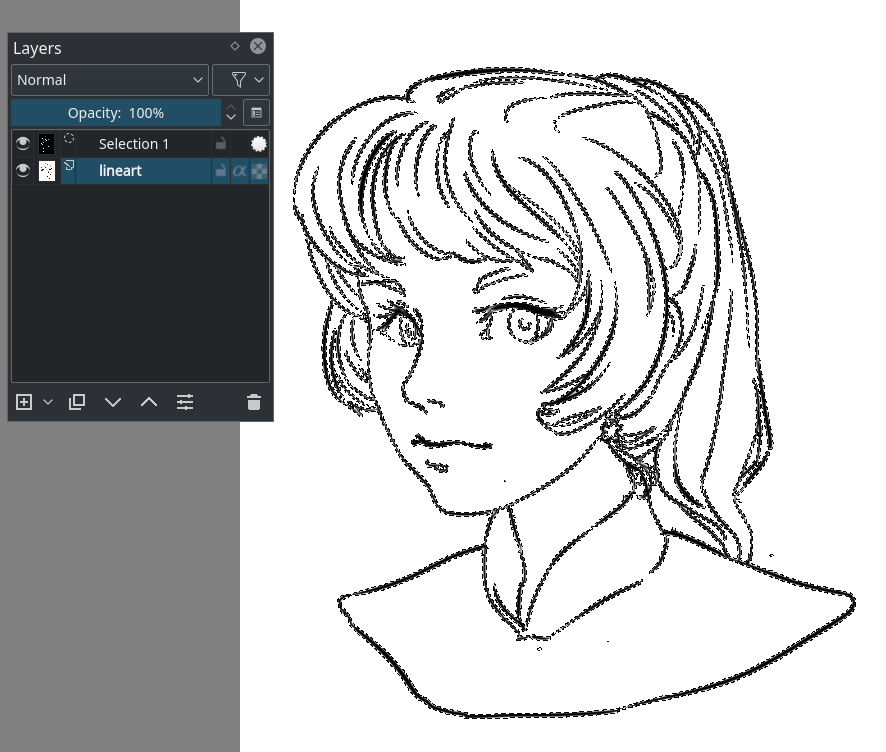
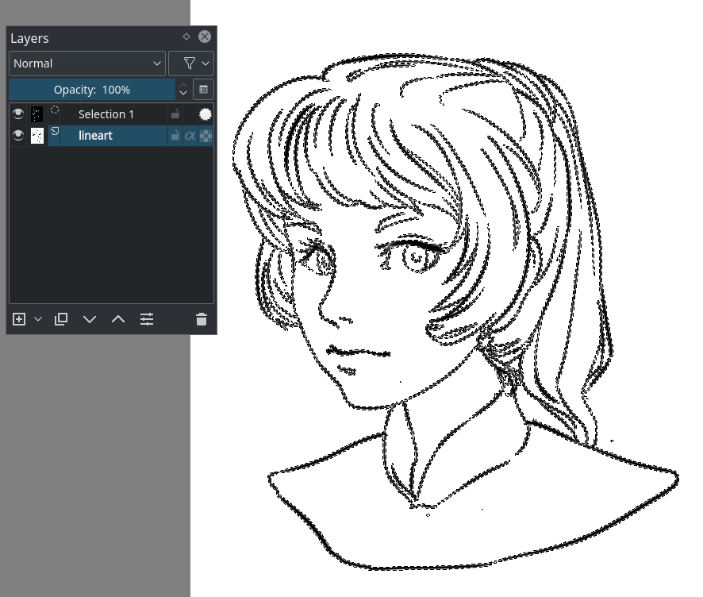
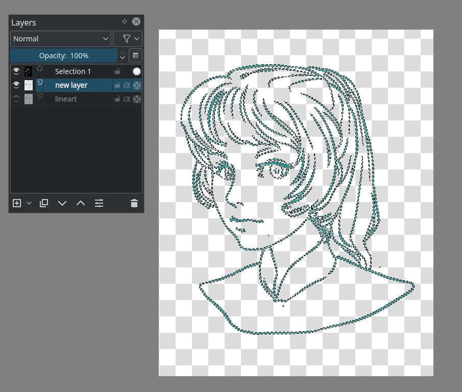
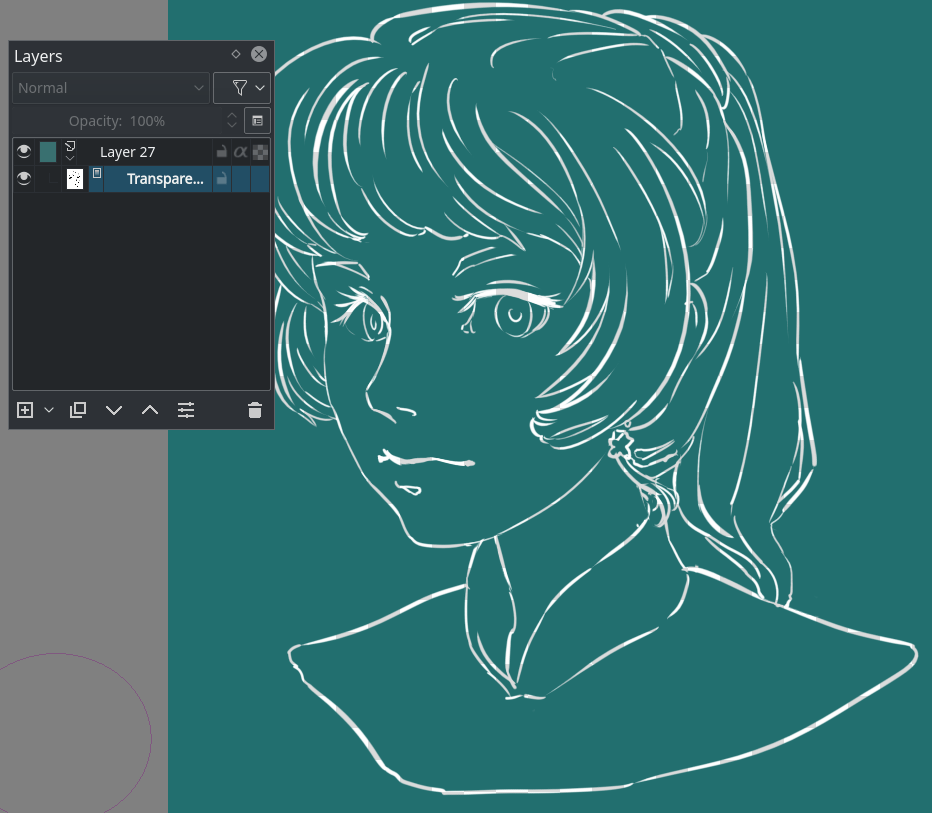
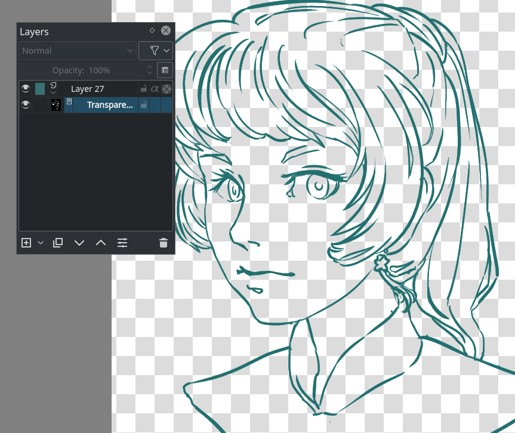

平塗著色¶
So you've got a cool black on white drawing, and now you want to color it! The thing we’ll aim for in this tutorial is to get your line art colored in with flat colors. So no shading just yet. We’ll be going through some techniques for preparing the line art, and we’ll be using the layer docker to put each color on a separate layer, so we can easily access each color when we add shading.
備註
This tutorial is adapted from this tutorial by the original author.
理解塗層¶
To fill line art comfortably, it's best to take advantage of the layerstack. The layer stack is pretty awesome, and it's one of those features that make digital art super-convenient.
In traditional art, it is not uncommon to first draw the full background before drawing the subject. Or to first draw a line art and then color it in. Computers have a similar way of working.
In programming, if you tell a computer to draw a red circle, and then afterwards tell it to draw a smaller yellow circle, you will see the small yellow circle overlap the red circle. Switch the commands around, and you will not see the yellow circle at all: it was drawn before the red circle and thus ‘behind’ it.
This is referred to as the “drawing order”. So like the traditional artist, the computer will first draw the images that are behind everything, and layer the subject and foreground on top of it. The layer docker is a way for you to control the drawing order of multiple images, so for example, you can have your line art drawn later than your colors, meaning that the lines will be drawn over the colors, making it easier to make it neat!
Other things that a layer stack can do are blending the colors of different layers differently with blending modes, using a filter in the layer stack, or using a mask that allows you to make parts transparent.
小訣竅
Programmers talk about transparency as ''Alpha'', which is because the 'a' symbol is used to present transparency in the algorithms for painting one color on top of another. Usually when you see the word ''Alpha'' in a graphics program, just think of it as affecting the transparency.
準備好你的線稿¶
Put the new layer underneath the layer containing the line art (drag and drop or use the up/down arrows for that), and draw on it.

…And notice nothing happening. This is because the white isn’t transparent. You wouldn’t really want it to either, how else would you make convincing highlights? So what we first need to do to color in our drawing is prepare our line art. There’s several methods of doing so, each with varying qualities.
色彩增值模式¶
So, typically, to get a black and white line art usable for coloring, you can set the blending mode of the line art layer to Multiply. You do this by selecting the layer and going to the drop-down that says Normal and setting that to Multiply.

And then you should be able to see your colors!
Multiply is not a perfect solution however. For example, if through some image editing magic I make the line art blue, it results into this:

This is because multiply literally multiplies the colors. So it uses maths!
What it first does is take the values of the RGB channels, then divides them by the max (because we're in 8bit, this is 255), a process we call normalising. Then it multiplies the normalized values. Finally, it takes the result and multiplies it with 255 again to get the result values.
Pink |
Pink (normalized) |
Blue |
Blue (normalized) |
Normalized, multiplied |
Result |
|
|---|---|---|---|---|---|---|
Red |
222 |
0.8705 |
92 |
0.3607 |
0.3139 |
80 |
Green |
144 |
0.5647 |
176 |
0.6902 |
0.3897 |
99 |
Blue |
123 |
0.4823 |
215 |
0.8431 |
0.4066 |
103 |
This isn't completely undesirable, and a lot of artists use this effect to add a little richness to their colors.
優點¶
Easy, can work to your benefit even with colored lines by softening the look of the lines while keeping nice contrast.
缺點¶
Not actually transparent. Is a little funny with colored lines.
使用選取¶
The second method is one where we'll make it actually transparent. In other programs this would be done via the channel docker, but Krita doesn't do custom channels, instead it uses Selection Masks to store custom selections.
Duplicate your line art layer.
Convert the duplicate to a selection mask.
 the layer, then .
the layer, then .Invert the selection mask. .
Make a new layer, and do .

And you should now have the line art on a separate layer.
優點¶
Actual transparency.
缺點¶
Doesn't work when the line art is colored.
使用遮罩¶
This is a simpler variation of the above.
Make a filled layer underneath the line art layer.

Convert the line art layer to a transparency mask
the layer, then .Invert the transparency mask by going to .

優點¶
Actual transparency. You can also very easily doodle a pattern on the filled layer where the mask is on without affecting the transparency.
缺點¶
Doesn't work when the line art is colored already. We can still get faster.
用顏色轉換到 Alpha¶
By far the fastest way to get transparent line art.
Select the line art layer and apply the Filter: Color to Alpha dialog under menu item. The default values should be sufficient for line art.
優點¶
Actual transparency. Works with colored line art as well, because it removes the white specifically.
缺點¶
You'll have to lock the layer transparency or separate out the alpha via the right-click menu if you want to easily color it.
幫圖片上色¶
Much like preparing the line art, there are many different ways of coloring a layer.
You could for example fill in everything by hand, but while that is very precise it also takes a lot of work. Let's take a look at the other options, shall we?
填滿工具¶

In most cases the fill-tool can’t deal with the anti-aliasing (the soft edge in your line art to make it more smooth when zoomed out) In Krita you have the grow-shrink option. Setting that to say… 2 expands the color two pixels.
Threshold decides when the fill-tool should consider a different color pixel to be a border. And the feathering adds an extra soft border to the fill.
Now, if you click on a gapless-part of the image with your preferred color… (Remember to set the opacity to 1.0!)
Depending on your line art, you can do flats pretty quickly. But setting the threshold low can result in little artifacts around where lines meet:

However, setting the threshold high can end with the fill not recognizing some of the lighter lines. Besides these little artifacts can be removed with the brush easily.
優點¶
Pretty darn quick depending on the available settings.
缺點¶
Again, not great with gaps or details. And it works best with aliased line art.
選取¶
Selections work using the selection tools.

For example with the 路徑選取工具 you can easily select a curved area, and the with Shift +  (not + Shift, there's a difference!) you can easily add to an existing selection.
(not + Shift, there's a difference!) you can easily add to an existing selection.

You can also edit the selection if you have turned on. Then you can select the global selection mask, and paint on it. (Above with the alternative selection mode, activated in the lower-left corner of the stats bar)
When done, select the color you want to fill it with and press the Shift + Backspace shortcut.

You can save selections in selection masks by a layer, and then going to . You first need to deactivate a selection by pressing the circle before adding a new selection.
This can serve as an alternative way to split out different parts of the image, which is good for more painterly pieces:

優點¶
A bit more precise than filling.
缺點¶
Previewing your color isn't as easy.
形狀工具¶
So you have a tool for making rectangles or circles. And in the case of Krita, a tool for bezier curves.
Select the path tool ( ), and set the tool options to fill=foreground and outline=none. Make sure that your opacity is set to 1.00 (fully opaque).
), and set the tool options to fill=foreground and outline=none. Make sure that your opacity is set to 1.00 (fully opaque).
By clicking and holding, you can influence how curvy a line draw with the path tool is going to be. Letting go of the mouse button confirms the action, and then you’re free to draw the next point.

You can also erase with a geometric tool. Just press the E key or the eraser button.

優點¶
Quicker than using the brush or selections. Also decent with line art that contains gaps.
缺點¶
Fiddly details aren’t easy to fill in with this. So I recommend skipping those and filling them in later with a brush.
著色遮罩¶
So it works like this:
選取著色遮罩工具。
Tick the layer you're using.
在著色遮罩圖層中繪製你想要的顏色。
Click update to see the results:

When you are satisfied, the colorize mask, and go to . This will turn the colorize mask to a generic paint layer. Then, you can fix the last issues by making the line art semi-transparent and painting the flaws away with a pixel art brush.

Then, when you are done, split the layers via . There are a few options you can choose, but the following should be fine:

Finally, press Ok and you should get the following. Each color patch it on a different layer, named by the palette in the menu and alpha locked, so you can start painting right away!

優點¶
Works with anti-aliased line art. Really quick to get the base work done. Can auto-close gaps.
缺點¶
No anti-aliasing of its own. You have to choose between getting details right or the gaps auto-closed.
結論¶
I hope this has given you a good idea of how to fill in flats using the various techniques, as well as getting a hand of different Krita features. Remember that a good flat filled line art is better than a badly shaded one, so keep practicing to get the best out of these techniques!